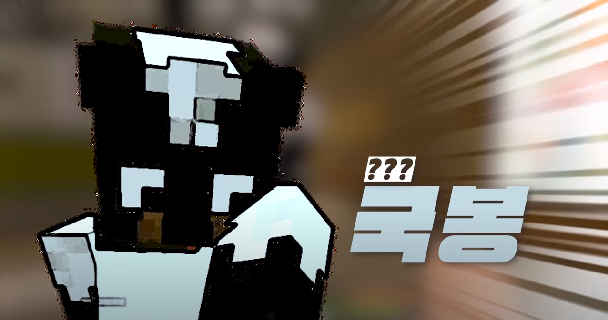

개요
“나 여기서 280원 벌었어...”
“겁나게! 정리할 게. 허벌나게! 많구만.” / “아녀 재밌어~”
“아유~ 방구뽕으로 기억하면 쉬워.”
“아이 왜그려 따끈~따끈~한 파인애플이 겁나게 맛있는디”
“그려 저기서 빠라랑~했당께?”
“아유~ 여자는 평생 청춘이여~”
|  |
냄새 제거 수술을 받고 우정리로 이사 온 스컹크, ‘방 국봉’1 |
| 이름 | 방국봉 | 대표색 | #c6c7cc |
| 동물 | 스컹크 | 아이콘 |  |
| 나이 | 미상 | 직업 | 무당 (스포일러) |
따로 신청받아 이 마을에 이사 오게 된 시청자 참여형 캐릭터이다.
자빱과의 관계
2일 차에 버스를 타고 덕구와 함께 우정리로 이사해왔는데, 마중을 나온 자빱에게 "나는 뭐 별 거 없어, 그냥 전라도 사람이여~"라고만 자신을 소개한다.
소개
- 덕구와 함께 온 외지인으로, 느긋하고 다정한 성미지만 냄새 제거 수술을 공치고 만 의료진에게는 욕 한 방쯤2 충분히 날릴 줄 안다.
- 상자 정리 솜씨가 일반인의 솜씨가 아니다. 물고기를 색깔별로(!) 정리해 놓을 정도.
- 별명은 핑핑이. 자빱 왈 '핑핑 놀기만 해서'.
여담
전라도 사람이어서 전라도 사투리를 유창하게 구사하는 바람에 자빱이 놀랐다.3